arXiv 2511.07820v4 · cs.RO · v1 2025 年 11 月，v4 2026 年 8 月 13 日 · Science Robotics 11 (117), eaed4592 (2026) · 中文精读
SONIC: Supersizing Motion Tracking for Natural Humanoid Whole-Body Control
作者 Zhengyi Luo、Ye Yuan、Tingwu Wang、Chenran Li、Fernando Castañeda（共同一作）等 28 人，NVIDIA，Linxi “Jim” Fan 和 Yuke Zhu 共同指导。
关于这份精读。我读的是 arXiv v4（2026 年 8 月 13 日）。没有读 Science Robotics 上发表的版本：science.org 对脚本返回 403，我也没有它的全文，它的条款也可能不同。本页所有转载只来自 arXiv 版。需要时我对照了 v1、v2、v3 和项目主页上的 PDF（内容接近 v3）。
许可。arXiv 摘要页标注 CC BY-SA 4.0。插图从 arXiv PDF 裁切，只裁切和缩放（约 1600 px 宽，转成 webp），没有其他改动，署名 Luo et al.。按 ShareAlike 条款，本页的文字和裁切图同样按 CC BY-SA 4.0 提供。内容用自己的话按原文顺序写，不是逐字翻译，公式按原文编号，表格数字照录。
代码。官方仓库 NVlabs/GR00T-WholeBodyControl，我读的是 commit 1e1ec4f（2026-11-02），只读，没有运行。许可是双重的：代码 Apache 2.0，权重 NVIDIA Open Model License。我还读了 Hugging Face 上 nvidia/GEAR-SONIC 的两个 config.yaml 和文件大小（没有下载权重），以及 Zenodo 存档（Apache 2.0）里作者的 Data S1 和 commit 6d8e931 的代码快照。项目的网页 demo 没有碰。
标成“读者注”的框是我核对的内容，不属于论文，页尾有汇总。
arXiv 摘要页的许可链接指向 CC BY-SA 4.0，这是我这里转载的依据。但 PDF 第一页页脚印着 “© 2026 NVIDIA. All rights reserved.”，v1 到 v4 都有类似字样。这两者字面上不一致。我按 arXiv 登记的许可处理，把这一点列出来，读者要再转载时请自己判断。
基础模型靠几千张 GPU 放大，但人形控制还停留在小网络、少数任务、几张 GPU。论文认为症结是任务选得不对：行走之类的任务要为每个场景设计奖励，无法放大。它提出把动作跟踪当作基础任务，因为动捕数据每一帧都提供目标，不用设计奖励。
读完我认为最值得记住的三点：(1) 三根轴放大的收益在失败率上才看得出来，而且是一次动一根轴，没有交叉实验；(2) 通用 token 是个相当工程化的设计，论文和代码之间在权重、量化前后、公布模型大小上都有差异；(3) 论文 v4 正文的成功判据比作者自己的数据说明和代码少了一项朝向，这直接影响别人怎么用它（读者注 5）。
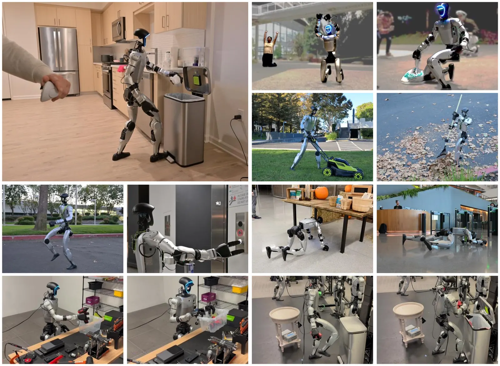
SuperMimic（arXiv 2610.28480）把 SONIC 当作主要的对比基线，而且一路都在算和它的差距。两者解决的是同一个问题，方向相反：SONIC 的回答是堆算力和数据，用无模型 PPO；SuperMimic 用一个可微世界模型把算力降下来。
按 SuperMimic 的原文，它和 SONIC 的具体联系是：
| SuperMimic 的说法 | 结果 | 我查到的 |
|---|---|---|
| 128 张 GPU | 对得上 | §2.1。公布配置 world_size: 128 |
| 7 天、约 168 h | 对得上 | v4 写 “128 GPUs over 7 days”。168 是 7 × 24，SONIC 自己没写这个数 |
| 约 21,000 GPU 小时 | 对得上 v3、v4 | 128 × 168 = 21,504。但 v1、v2 不一样，见读者注 3 |
| “SONIC 报告的” NVIDIA L40 | 论文里没有 | arXiv v1–v4 和项目主页 PDF 都没写 GPU 型号。仓库安装文档写 “L40 recommended”，eval_exp.yaml 注释提到 “L40 (49GB VRAM)”，都不是在说那 128 张卡。合理的推测，但不是“报告的”。发表版我没读，那里可能有 |
| 611 h 数据 | 对得上 | §3.1、表 2 |
| BONES-SEED 是公开子集，142,220 个片段 | 对得上 | §3.1。SONIC 写 288 h，SuperMimic 的 264.56 h 是过滤后的长度 |
| 过滤词表来自 SONIC 代码 | 词表存在 | filter_and_copy_bones_data.py。文档说去掉约 8.7%，SuperMimic 去掉 12,553/142,220 = 8.83% |
| 公布检查点回报 0.90；失败 179；v1.1 失败 239 | 核对不了 | SONIC 的论文、代码、Data S1 都没有这个基准。要验证只能自己跑仿真，我没有跑 |
| 这些动作“对两者都是训练动作” | 核对不了 | 公布配置写的是 motion_lib_bones_seed/robot_filtered/，但文档说配置里是内部路径。公开词表去掉了 acrobatics_、cartwheel、handstand、safety_roll 等，空翻和侧滚片段到底有没有进 SONIC 的训练集，我没有片段清单，判断不了 |
| SONIC 自己的判据“没有朝向项” | 只对 v4 正文成立 | v1–v3 正文、Data S1 说明页、官方 tracking/eval.yaml 都有 1 rad 朝向项，见读者注 5 |
| 把 21k GPU 小时算在“公布检查点”头上 | 两者不一定是一回事 | 21k 是论文 5 万次迭代、42M 模型的开销。默认公布检查点的解码器小得多，配置写 10 万次迭代，还带一个加载路径，见读者注 16 |
结论：算力和数据的数字站得住。1000 倍这个比值的分母和分子不是同一个模型，这一点值得记在心里，但 7000 多倍的余量很大。真正需要修正的是判据那一条。SuperMimic 页的读者注 14 说 SONIC 被一个“它训练时没针对”的判据评判，从代码看不成立，公布配置训练时的朝向判据比 SuperMimic 严得多。
问题。GPT 这类基础模型用 25,000+ 张 GPU，视频和图像模型用几千张，规模带来了涌现能力、泛化和鲁棒性。人形控制没有这样的放大：通常是三层 MLP、几张 GPU、一个任务，奖励逐任务手写。
为什么没放大。论文认为根子在任务选择。行走的奖励对跳舞、起身或遥操作没有帮助，每加一个能力就要重写目标。AMP、ASE、CALM 这类生成式模仿（用判别器匹配动作分布，加上简单任务奖励）给了统一目标，但已有工作表明动作集又大又杂时判别器信号容易模式塌缩。而且就算目标能放大，也要接得上遥操作、导航、视觉语言命令等不同的用法。
做法。把动作跟踪当作可放大的基础任务。动捕数据提供逐帧的稠密监督，不用设计奖励，数据也现成（走、跑、舞、运动、物体交互都有）。已有跟踪工作多半只展示训练数据上的结果，也很少接下游任务。本文放大到 1 亿帧（50 Hz）、128 卡，并加两样东西：一个运动学动作生成系统，负责交互控制；一个通用 token 空间，把异构的动作来源统一到一个接口。
SONIC 是 “Supersizing mOtion tracking for Natural humanoId Control” 的缩写。token 空间让估计出的人体动作可以直接驱动机器人，运行时不用显式重定向（把人体动作映射到机器人关节）。
三项贡献。
| 版本 | 摘要 | §2 第一句 | 我算的 |
|---|---|---|---|
| v1（2025-11）、v2（2025-12） | 9k GPU hours | 32,000 GPU hours (128 GPUs over 3 days) | 128 × 72 = 9,216，和 9k 一致，和 32,000 不一致 |
| v3（2026-05）、v4（2026-08） | 21k GPU hours | 21k（v3 写 21,000）GPU hours (128 GPUs over 7 days) | 128 × 168 = 21,504，一致 |
所以引用时要写清版本。SuperMimic 用的是后一组，发表时间也在 v4 之后。论文没有解释改动的原因。v1 和 v2 的 3 天和 v3 的 7 天是同一次训练还是重训了，我查不到。
平台是 Unitree G1 人形机器人（29 个驱动关节）。
指标。成功率 Succ：偏离参考太远算失败。MPJPE-L：相对根部的平均关节位置误差，单位 mm，算 14 个身体部件。\(E_{\rm acc}\)（mm/帧²）和 \(E_{\rm vel}\)（mm/帧）：仿真机器人和参考之间的加速度差和速度差，衡量物理真实度。
原文括号里写 pelvis, knees, ankles, torso, elbows, wrists，左右分开数是 10 个。代码 im_eval_callback.py 和 motion.yaml 列的 14 个，另外还有左右髋（hip_roll）和左右肩（shoulder_roll）。数目是对的，是括号漏了两类。
测试集。从自己的动捕数据留出两份：test-content（7,016 片段，15 小时，182 个训练中完全没有的子类别），测对新内容的泛化；test-repetition（9,395 片段，12 小时），测已知动作类型的新演绎。基线对比另加 PHUMA（论文，68,326 个动作，来自不同的重定向流程）。
判据（v4 原文）。根部高度或末端高度偏离参考超过 0.25 m 算失败。作者解释，以前的工作常用全局根位置误差（比如 0.5 m），本文是局部跟踪，不跟全局轨迹，这个判据抓住跌倒这类有物理意义的失败。
v4 正文只写高度。其他来源都还有一项根朝向：
| 来源 | 判据 |
|---|---|
| v1、v2 正文 | 身体高度 > 0.25 m，或根朝向差 > 1 rad |
| v3 正文、项目主页 PDF | 根或末端高度 > 0.25 m，或根朝向差 > 1 rad |
| v4 正文 | 根或末端高度 > 0.25 m |
| Data S1 说明页（Zenodo，文件日期 2026-07-09，早于 v4） | 根或末端偏差 > 0.25 m，或根朝向误差 > 1 rad |
官方 tracking/eval.yaml（1e1ec4f 和 Zenodo 的 6d8e931 相同） | 根高 0.25，末端高 0.25（踝、腕），exceeded_anchor_ori 阈值 1.0：旋转角的平方 > 1，即 57.3° |
公布配置 sonic_release/config.yaml，训练判据 | 根高、末端高 0.15（参考根部低于 0.5 m 时放宽到 0.75），脚位置 0.2，旋转角² > 0.2，即 25.6° |
| SuperMimic 训练和评测判据 | 根高 > 0.25，或倾斜量 \(|g_{{\rm ref},z}-g_{{\rm rob},z}|\) > 0.8 |
论文没有解释 v4 为什么去掉这一项。图 2 的数据来自 Data S1，而 Data S1 的定义包含朝向，所以我认为（推断）v4 正文的文字比数据实际用的判据少一项，这是文字的问题，不是换了判据。
对 SuperMimic 附录 F 的影响。它写 “SONIC 自己的判据……没有朝向项 [1]”，字面上符合 v4 正文，却不符合代码和作者的数据说明。那边的读者注 14 担心 SONIC 被含倾斜项的判据不公平地评判，也要改过来：SONIC 的公布配置训练时就有朝向终止，而且是总旋转角，比倾斜量严。
两种朝向项怎么比（我的计算）。倾斜量是两个重力方向 z 分量的差。绕俯仰轴误差 \(\phi\)、参考俯仰 \(\alpha\) 时，它等于 \(|\cos\alpha-\cos(\alpha+\phi)|\)，所以：竖直参考时要 \(\phi=\arccos(0.2)=78.5°\) 才到 0.8；最紧的情形下限是 \(2\arcsin(0.4)=47.2°\)，出现在两个方向的中点水平时，比如空翻中段；绕竖直轴的偏航误差永远是 0。SONIC 的总旋转角不看参考姿态，评测 57.3°，训练 25.6°。所以在直立动作上，SuperMimic 的判据比 SONIC 官方评测宽松；只有躯干接近水平的那一段，它可能更严（47°–57°），而且严得不多。SuperMimic 还去掉了末端项。整体上这个判据不比 SONIC 自己的评测更苛刻，但这只是比判据的形状，换判据后 179 会变成多少，只有重跑才知道，我没有跑。第 11 幕可以切换参考姿态看这个计算。
放大实验。三根轴：数据 4M、10M、22M、100M 帧（对应 20k、50k、110k、317k 片段，子集按子类别均匀抽样以保持多样性）；模型 1.2M、16M、42M 参数；算力 2、4、16 个节点（16、32、128 张 GPU），都训到 5 万次迭代，约合 2k、9k、21k GPU 小时。全部在 Isaac Lab 中评测。最大的模型在 test-content 上 99.6% 成功、23.8 mm，最小的是 98.0%、27.7 mm。作者说 OOD（未见过）上的收益最明显，说明放大提升了泛化。算力这根轴上，迭代数相同时 GPU 越多渐近性能越好，因为批量大优化更稳。
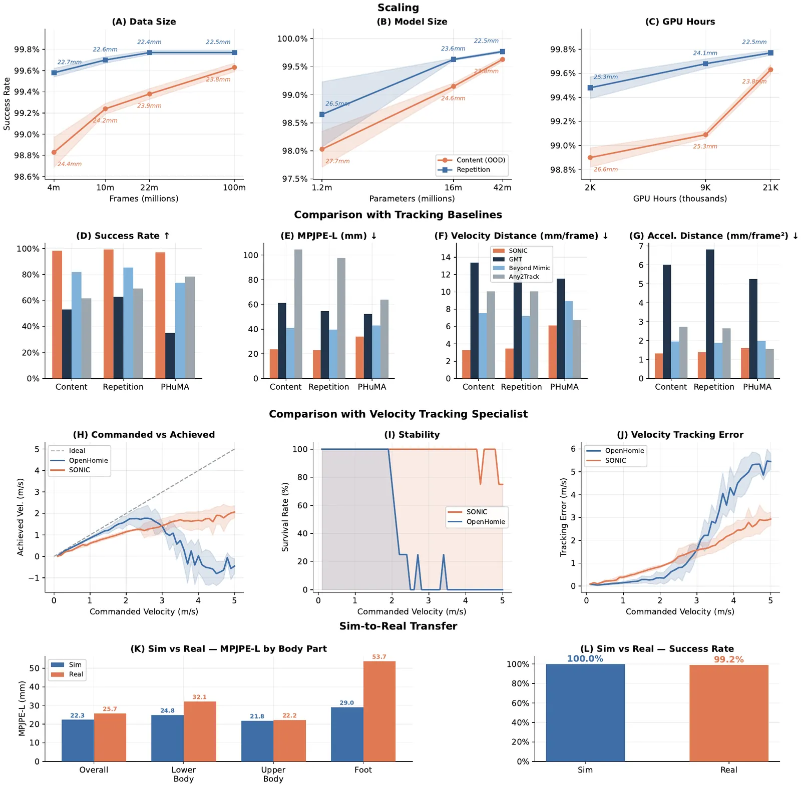
图 2(A–C) 的数值 · 来自作者 Data S1（均值，两位小数），成功率 % / MPJPE-L mm
| 轴 | 档位 | test-content | test-repetition | 评测数 |
|---|---|---|---|---|
| 数据 | 4M 帧 | 98.83 / 24.37 | 99.58 / 22.71 | 6 |
| 10M 帧 | 99.24 / 24.17 | 99.70 / 22.62 | 6 | |
| 22M 帧 | 99.38 / 23.87 | 99.77 / 22.37 | 6 | |
| 100M 帧 | 99.63 / 23.77 | 99.77 / 22.50 | 6 | |
| 模型 | 1.2M | 98.03 / 27.70 | 98.65 / 26.50 | 6 |
| 16M | 99.15 / 24.64 | 99.63 / 23.63 | 6 | |
| 42M | 99.63 / 23.77 | 99.77 / 22.50 | 6 | |
| 算力 | 约 2k GPU·h | 98.90 / 26.63 | 99.48 / 25.29 | 4 |
| 约 9k GPU·h | 99.09 / 25.26 | 99.68 / 24.10 | 6 | |
| 约 21k GPU·h | 99.63 / 23.77 | 99.77 / 22.50 | 6 |
三档都训到 5 万次迭代，GPU 小时除以卡数得到墙钟：2000/16 = 125 h，9000/32 ≈ 281 h，21000/128 ≈ 164 h，折合每次迭代约 9.0 s、20.3 s、11.8 s。32 卡这一档每次迭代比 16 卡和 128 卡都慢。这可能来自共享集群或别的差异，论文写的是“约”，也没有解释。这说明 “GPU 小时” 这根轴其实是在同样迭代数下加批量（样本数比 1:2:8），GPU 小时比是 1:4.5:10.5，并不是同一个量的放大。v1 用的还是 8、32、128 卡。
另外，每次迭代的样本数是 4096 × 128 × 24 = 12,582,912，5 万次是 6.3×10¹¹ 样本，50 Hz 下相当于约 399 年的机器人时间（我的计算）。
图 2 图注和 §3 写 “n = 6 independent evaluations”。Data S1 说明页写明是 2 个训练种子 × 3 个检查点，同一种子的三个检查点并不独立。还有两个例外：约 2k GPU·h 那一点只有 4 次评测，而图注写 n = 6；全量数据点的第二个种子用的是 46k、54k、56k 迭代的检查点，不是正文说的“都到 5 万”。
§3.7 的 Welch 检验（图注 “all P ≤ 0.011”）把这 6 个当独立样本。我核对了最大的 P 值 0.01086（2k 对 21k，test-repetition），确实 ≤ 0.011。但只按 2 个种子算的话自由度很小，这些 P 值偏乐观。方向和幅度看着是可信的，显著性的数字不宜当真。阴影带用的是总体标准差（ddof = 0），也比样本标准差略窄。
99.6% 和 98.0% 看着差不多。按 test-content 的失败率算（Data S1，我的计算）：数据轴 1.17% → 0.37%（3.2 倍），模型轴 1.97% → 0.37%（5.3 倍），算力轴 1.10% → 0.37%（3.0 倍）。MPJPE-L 只变了 0.6 到 3.9 mm。
三根轴共用同一个终点（三个方向的 99.63% / 23.77 mm 是同一组数据），也就是说实验是从最大配置分别往回减一根轴，没有交叉实验。论文标题说“一起放大”，能支持的是“每根轴单独减少都变差”。三根轴的相互替代关系，比如更多数据能不能靠更少算力，这里看不出来。这恰好是 SuperMimic 想打破的地方。
另外 test-repetition 在数据轴上 22M 就到顶了（99.77 和 99.77），MPJPE 反而从 22.37 升到 22.50；新增数据的收益集中在 OOD。这和论文的说法一致。
和其他跟踪器比。对比 GMT、Any2Track 和 BeyondMimic。这些基线训练数据不同：Any2Track 和 BeyondMimic 用 LaFAN，GMT 用 AMASS（论文）。BeyondMimic 本来是单动作跟踪器，作者用公开代码重训成多动作。为了协议一致，全部在 MuJoCo 中用同一判据评测。作者自己说明，这主要反映跨数据集泛化和放大的效果，不是完全同数据的对比。
图 2(D–E) 的数值 · 来自 Data S1。论文正文只给了 SONIC、BeyondMimic、Any2Track 的成功率和两个 MPJPE
| 方法 | test-content 成功 / MPJPE-L | test-repetition | PHUMA |
|---|---|---|---|
| SONIC | 98.53% / 23.74 | 99.22% / 22.97 | 97.23% / 33.82 |
| BeyondMimic | 81.97% / 40.91 | 85.39% / 39.44 | 73.77% / 42.77 |
| Any2Track | 61.60% / 104.39 | 69.41% / 97.40 | 78.46% / 63.96 |
| GMT | 53.05% / 61.27 | 63.08% / 54.45 | 35.01% / 52.33 |
SONIC 比 BeyondMimic 的 MPJPE-L 低 42%（23.7 对 40.9）。作者特别提到 PHUMA 上的 97.2%，因为它来自视频姿态估计加不同的重定向，比自己的留出集更偏离分布。
摘要和放大曲线用 Isaac Lab：99.63%。基线对比用 MuJoCo：98.53%，失败率差 4 倍（0.37% 对 1.47%）。引用时要说明哪个仿真器。SuperMimic 的基准又是另一套（训练动作，自己的判据）。
(E–G) 只在成功的动作上平均，§3.7 和 Data S1 都明说了。于是 GMT 的 52 mm 是它 35% 成功的简单动作上算的，SONIC 的 33.82 mm 是 97% 上算的。这是幸存者偏差，对基线其实有利，也说明这几列不能直接比“同样动作上的精度”。42% = (40.91 − 23.74)/40.91 算术没问题，但前提是这个分母。
Data S1 说图上的 “Any2Track” 在原始文件里叫 OpenTrack。
和专门控制器比。对手是 OpenHomie（HOMIE），上身逆运动学、下身速度跟踪。在 MuJoCo 中测 0–5 m/s 的命令：SONIC 总存活率 98.5%，OpenHomie 43.0%。后者过 2 m/s 就掉下去，过 2.5 m/s 低于 20%；SONIC 到 4 m/s 附近都接近 100%。
197/200 和 86/200 我从 Data S1 逐点加过，正确，换算是 98.5% 和 43.0%。SONIC 那 3 次失败在 4.4、4.9、5.0 m/s。“到约 4 m/s 接近 100%”也对。
但图 2(H) 同一组数据显示：SONIC 命令 2、3、4、5 m/s 时，实际速度只有 1.15、1.44、1.68、2.07 m/s，全程最高就是 2.07。也就是说 SONIC 不是在跟踪 5 m/s，是没跟上但也没摔。§2.2 提到 6 m/s 是命令上限，实际被跟踪能力和弹簧滤波限制。
低速时结论是反过来的：≤ 2 m/s 的 20 个点上，平均跟踪误差 SONIC 0.43 m/s，OpenHomie 0.18 m/s（我从 Data S1 算的，配对 t 检验 P = 4.2×10⁻⁷，OpenHomie 更低）。> 2 m/s 时 SONIC 1.96，OpenHomie 3.03。§3.7 提到两者交叉，但 §2.1 和 §2.6 只写 98.5 对 43.0，并由此说“多样性比专门化更有益”。在 OpenHomie 设计的速度范围内，它更准。
真机。部署 124 段动作，每段一次：真机成功 99.2%（123/124），仿真 100%（124/124）；MPJPE-L 25.7 mm 对 22.3 mm。上身差距最小（22.2 对 21.8 mm），脚最大（53.7 对 29.0 mm），因为接触下的精确落脚最难。Data S1 说明真机的均值只算成功的 123 段。
规划器用自回归方式不断重新生成未来的运动学动作，条件是之前的状态和用户命令。每次生成 0.8–2.4 s，长度由规划器自己定。推理在笔记本上低于 5 ms，Jetson Orin GPU 上约 12 ms。最快每 100 ms 重规划一次，命令变化时立即重规划。
支持的应用都是训练后才指定的，不重训规划器或策略：任意速度、方向和风格的导航；打拳；蹲、爬、跪这类运动技能。命令速度 0–6 m/s，方向 0–360°；6 m/s 只是上限，实际还要过弹簧模型和跟踪器能力（见读者注 10）。风格有醉酒走、受伤走、开心走、潜行。蹲和跪时骨盆高度 0.3–0.8 m 连续可调；爬行靠肘和膝全向移动，0–0.5 m/s。作者说已有的打拳方案要在几个专家模型或动作标签之间切换，造成停顿，这里是连续的。
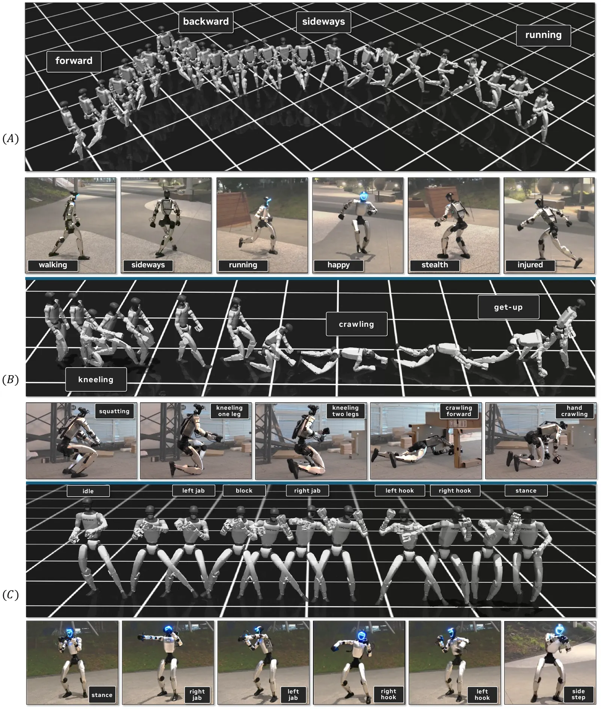
基于 GEM 的统一动作生成系统（一个既做人体动作估计也做生成的模型，参考文献 [50] 的 GENMO）接受视频、自然语言和音乐三种输入。视频：预录或单目摄像头，估计 ≥ 60 fps，不需要动捕设备。文本：任意时刻输入提示词，比如“向前走”“踢左脚”“像猴子一样跳舞”，≥ 60 fps 合成。音乐：按旋律、节奏和节拍生成舞蹈。三者之间能平滑切换。
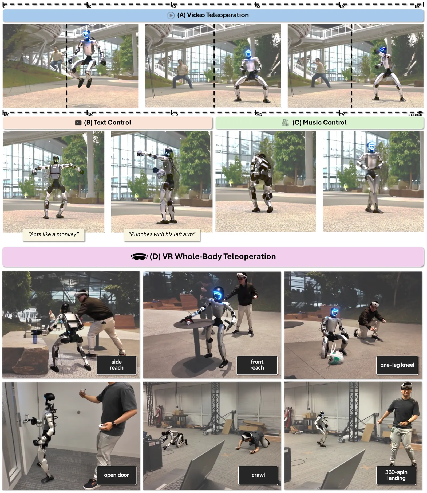
两种接口。全身：PICO 头显、踝部追踪器和手柄，输出 SMPL 格式的全身姿态，走人体编码器 \(\mathcal E^h\)。三点：只用头显和手柄，给头和双手的 SE(3) 位姿、手指角度、腰高和导航命令，下身由规划器生成。两者用同一个 token 空间，也用来采集 VLA 模型的训练数据。细节在 S1.4。
把 GR00T N1.5 VLA 模型接到 token 接口上做全自主控制，评测五个任务。第一个任务用三点接口，其余四个用全身接口。全身接口时 VLA 预测 78 维动作：64 维 token 加 14 维手关节。作者观察到预测 token 比预测 SMPL 姿态平滑安全，后者动作抖、方向控制差。成功是严格的二元判定。
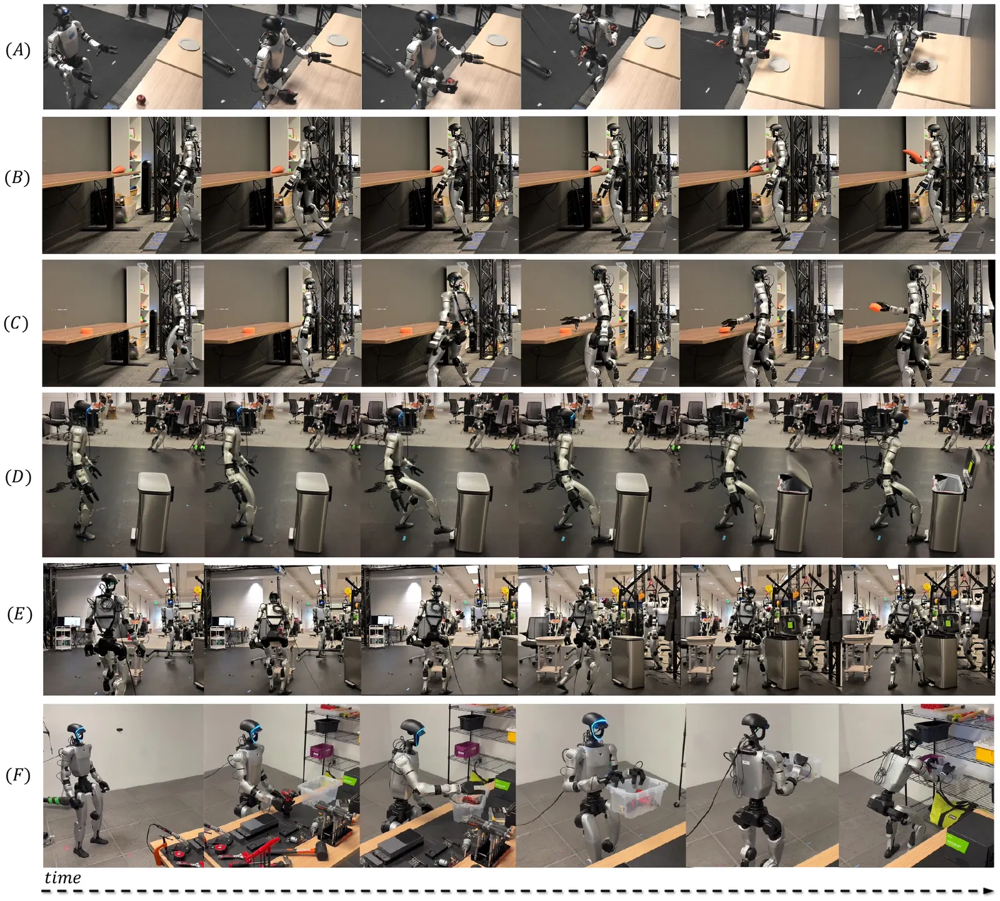
表 1 · VLA 通过通用 token 接口控制（照录原文）
| (A) 任务 | 接口 | 训练数据 | 试验 | 成功 |
|---|---|---|---|---|
| 苹果到盘子 | 3-point | 300 trajs（单物体） | 20 | 90% |
| 捡物（胡萝卜） | whole-body | 3,900 trajs（多物体） | 20 | 75% |
| 捡物（刷子） | whole-body | 3,900 trajs（多物体） | 20 | 95% |
| 开垃圾桶（脚） | whole-body | 200 trajs | 10 | 70% |
| 汽水罐入桶 | whole-body | 1,000 trajs（多物体） | 10 | 60% |
| 电钻和箱子 | whole-body | 300 trajs | 10 | 70% |
| 平均（5 个任务） | 75% | |||
| (B) 动作空间 | FSQ token | SMPL 姿态 | Δ |
|---|---|---|---|
| 捡胡萝卜 | 75% | 60% | +15 |
| 开垃圾桶（脚） | 70% | 20% | +50 |
| 汽水罐入桶 | 60% | 0% | +60 |
| 平均 | 68% | 27% | +42 |
75% = (90 + (75+95)/2 + 70 + 60 + 70)/5，两种捡取合并算一个任务，表注说了。(B) 68.3、26.7、差 41.7，四舍五入后写成 68、27、+42，都对得上。
样本量很小。按 95% Wilson 区间（我的计算）：10 次成 6 次是 31%–83%，10 次成 0 次是 0%–28%，20 次成 15 次是 53%–89%。假设 SMPL 列的试验次数和 token 列相同（论文没写）：汽水罐 60 对 0 的区间不重叠，开垃圾桶 70 对 20 只小幅重叠（40–89 和 6–51），胡萝卜 75 对 60 重叠很多。第 10 幕画了这些区间。
为什么跟踪能放大。作者归因于稠密的逐帧监督：每一帧都有显式的目标姿态，学习信号不随数据量和多样性变弱。AMP、ASE 的判别器要区分整个分布上的真假动作，多样性越大信号越弱，导致模式塌缩（引用的工作如此）。为具体任务设计奖励则不通用。OpenHomie 的对比被当作具体证据；其速度跟踪超过 8 GPU 不再改善（图 S6），SONIC 随算力继续改善。这是作者的解释，没有实验在同一框架下直接分离这些因素。
token 表示的是全身，所以 VLA 可以控制包括脚在内的整条运动链。
局限。没有对长期部署的安全和能效做正式处理。跟踪器靠动作命令的域随机化和弹簧模型对噪声规划输出鲁棒，但在更极端或很动态的动作下可能失衡。
研究设计。问题是物理跟踪是否随数据、模型和算力良好放大。在 Isaac Lab 中训练，在仿真和真机中测试，系统地改变三个量，用预定义的留出集评测。所有训练用同样的超参数（表 S2）和奖励（表 S3）。
大规模动捕，男女演员均衡，覆盖运动、日常、手势和大量战斗动作，片段 1–180 秒，几千种动作，多数由多人多次演绎。源数据约 700 小时。用 GMR（论文）和 PyRoki 重定向到 G1，过滤掉机器人做不了的动作（爬楼、坐着），剩 611 小时（100M+ 帧，50 Hz）。
33 个大类、8,447 个子类，每个动作有多个演员，并镜像成左右两份。test-content 的子类完全不在训练集，test-repetition 子类全部重叠但片段不重合。
公开数据。相当一部分以 BONES-SEED 发布：142,220 个标注序列（288 小时），522 名演员，有 SOMA 和 G1 两种格式，带自然语言描述和时间分段。
表 2 · 数据划分（照录原文）
| Train | Test-Content | Test-Rep. | |
|---|---|---|---|
| 片段 | 317,189 | 7,016 | 9,395 |
| 时长（小时） | 611 | 15 | 12 |
| 子类 | 8,447 | 182 | 1,088 |
| 子类与训练重叠 | — | 0% | 100% |
| 片段与训练重叠 | — | 0% | 0% |
| 运动（基础 + 高级） | 53,255 | 2,481 | 2,683 |
| 手势 | 37,939 | 1,488 | 1,125 |
| 表演 / 角色扮演 | 68,742 | — | 20 |
| 战斗（剑、武术等） | 50,162 | — | — |
| 道具 / 物体操作 | 14,513 | 701 | 253 |
| 舞蹈 | 9,689 | 504 | 485 |
| 受伤 | 9,386 | 1,167 | 528 |
| 动作 / 工具使用 | 9,920 | 228 | 322 |
| 其他（10+ 大类） | 63,583 | 429 | 890 |
训练列分类加起来正好 317,189。test-content 列加起来是 6,998，比 7,016 少 18。test-repetition 加起来是 6,306，比 9,395 少 3,089，约三分之一的片段不在列出的类别里（表里“战斗”是 —，表演只有 20）。论文没解释，可能是还有没列出的类别，但 “Others” 已经是兜底行。这不影响结果数字。
611 h × 3600 × 50 Hz = 1.10 亿帧，所以 “100M” 是取整的说法；288 h 约 5,184 万帧。100M 对应 317k 片段，平均每段约 6.9 s。
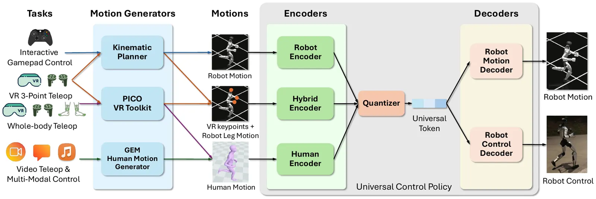
自己画的 · 11 幕 3D 框架动画
核心框架拆成 11 幕：总览、三轴放大（可切换轴和档位）、PPO 跟踪训练、三个编码器、FSQ（当场量化）、四项损失、自适应采样、规划器（当场算弹簧）、遥操作、VLA、和 SuperMimic 的判据对账。可以暂停、拖进度、旋转画面。
形式化。马尔可夫决策过程 \(\mathcal M=\langle\mathcal S,\mathcal A,\mathcal T,\mathcal R,\gamma\rangle\)，用 PPO 最大化 \(\mathbb E[\sum_{t=1}^T\gamma^{t-1}r_t]\)。环境设定来自已有跟踪工作，以 BeyondMimic 调好的设定为放大的基础。
状态。本体感受 \(s^p_t\) 和动作命令 \(s^g_t\)。\(s^p_t=(q_t,\dot q_t,\omega_t,g_t,a_{t-1})_{t-9:t}\)：关节位置、速度、根角速度、根坐标系下的重力、上一动作，取 10 步历史。\(s^g_t\) 是三种之一：机器人动作 \(g^r\)、人体动作 \(g^h\)、混合动作 \(g^m\)（上身关键点加下身机器人动作）。全部用机器人局部坐标系，旋转用 6D 表示。
动作和奖励。策略输出目标关节位置，由 PD 控制器跟踪。\(r_t=\mathcal R(s^p_t,s^g_t)+\mathcal P(s^p_t,a_t)\)，跟踪项加惩罚项，见表 S3。域随机化：物理参数、周期性的根速度扰动、目标动作命令的扰动，见表 S4。
通用控制策略。专门的编码器把异构输入映射到共享潜空间，量化成 token，驱动同一个控制解码器；辅助的动作解码器帮助学特征，也充当隐式的人到机器人重定向。
训练。同步准备三种命令的数据，分别编码量化成 \(z^r,z^h,z^m\)，每个都经 \(\mathcal D^c\) 和 \(\mathcal D^r\)。总损失：
输入是人体动作时，式 (2) 就是重定向损失，这也是能用人体数据学的原因。式 (3) 让同一段动作的三种表示得到相近的 token。式 (4) 让“人到机器人再回来”保持一致。
四项在一个循环里端到端优化。非对称演员-评论家：评论家在训练时看特权状态（基座线速度、全身部件位姿、无噪声观测），演员只看部署时能拿到的量。PPO 损失更新编码器、量化器、\(\mathcal D^c\) 和评论家；其他三项更新编码器和 \(\mathcal D^r\)。梯度通过直通估计（反传时把取整当恒等）穿过 FSQ。作者说，从 1.2M 到 42M 都没有观察到耦合带来的不稳定。
自适应采样。把数据切成固定时长的桶，按有上限的失败率加权，兼顾难动作和均匀覆盖。分布式训练基于 Accelerate 和 TRL，运行在 Isaac Lab 上。
应用。手柄走规划器和 \(\mathcal E^r\)；VR 全身走 \(\mathcal E^h\)，三点走 \(\mathcal E^m\)；VLA 直接预测 token；多模态走 GEM 和 \(\mathcal E^h\)。
token_losses.py、universal_token_modules.py、g1_recon_and_all_latent.yaml）
| 论文 | 代码 |
|---|---|
| 式 (1) 四项无权重 | g1_recon 权重 0.01；g1_smpl、g1_teleop、teleop_smpl、reencoded_smpl_g1 权重 1.0。动画第 6 幕按代码写 |
| 式 (3)(4) 写在量化后的 \(z\) 上 | 在量化前的连续潜变量上算（encoded_latents，no_quantization=True）。这样更合理，取整后的差几乎没有有用的梯度 |
| 每种命令都编码、都解码 | 每个环境按 1:1:1 抽一个编码器驱动（encoder_sample_probs），SMPL 环境同时算 g1 和一部分 teleop 作配对。所以式 (2) 三项是在抽样子集上一个 G1ReconLoss 算的，PPO 只走抽到的那条路 |
| \(\mathcal E^r\)：关节位置和速度。\(\mathcal E^h\)：3D 关节位置 | 另加根朝向；\(\mathcal E^h\) 还加腕关节（公布配置） |
顺带：配置项 detach_teleop_target: True 写在 teleop_smpl_latent 下，但 TeleopSmplLatentLoss 用 **kwargs 吞掉了它，forward 里没有 detach。代码里的 num_fsq_levels: 32 实际是维数，fsq_level_list: 32 才是每维级数，读代码时容易看反。
一个大规模潜空间生成模型，和跟踪策略用同样的数据训练。任务形式是自回归的动作补间：生成把当前姿态平滑接到目标关键帧的中间动作。上下文关键帧是历史状态，目标关键帧来自用户命令（速度、方向、风格）或技能（蹲、爬、打拳）。
表示。训练时抽 0.8–2.4 s 的片段，两端做关键帧。用骨盆相对的关节位置和全局关节旋转。用全局旋转而不是规范化的局部旋转，是因为蹲和爬时朝向定义不清。训练样本随机旋转以覆盖所有初始朝向。
潜空间。动作先编码成 token 序列，下采样 4 倍：
\(p_t\) 是姿态，\(r_t\) 是根位置。用掩码 token 预测，不是一次预测全部：网络看起止关键帧和当前的 token，反复预测并定下最有把握的那部分：
第一轮全部 token 未知，用可学习的 \(z_{\rm masked}\) 初始化。训练时掩码比例在 100% 到 0% 间均匀抽样。推理时用余弦调度决定每轮定下的比例 \(1-\cos(\frac\pi2\cdot\frac{L}{L_{\max}})\)。全部定下后解码成运动学动作。论文没有给 \(L_{\max}\)。
根轨迹弹簧。用临界阻尼弹簧模型从命令生成关键帧的根位置和朝向，原文写作：
用在骨盆 x、y 位置和投影朝向上，位置阻尼 \(5\ln 2\)，朝向 \(20\ln 2\)。只给速度时，按 1.0 s 后的位置算目标，再把关键帧放在 \(x(1.0)\)。作者说规划器对阻尼不敏感，弹簧甚至常常可以去掉，但加上更可预测，也能防止不现实的命令，比如从 6 m/s 突然到 −6 m/s。
把 \(t=0\) 代入式 (8) 得 \(x_T-x_0\)，不是 \(x_0\)；\(t\to\infty\) 得 0，不是 \(x_T\)。这是 v4 的 HTML 源里 alttext 也如此（x(t)=\left(x_{T}-x_{0}+\left(v_{0}+\frac{c}{2}\left(x_{T}-x_{0}\right)\right)t\right)e^{-\frac{c}{2}t}）。把它当“剩余误差”解释也不完全对，那样 \(v_0\) 前应该是负号。
代码里（motionbricks/motionbricks/motion_backbone/demo/full_agent.py，_generate_spring_model_position_and_heading）是标准形式：\(x(t)=(j_0+j_1t)e^{-yt}+x_T\)，\(j_0=x_0-x_T\)，\(j_1=v_0+j_0y\)，满足 \(x(0)=x_0\)、\(\dot x(0)=v_0\)、\(x(\infty)=x_T\)。动画第 8 幕可以切换两种，曲线当场算。
阻尼：代码位置用 \(y=4\ln2/0.8/2\)，即 \(c=2y=5\ln2\)，和论文一致。朝向代码写“半衰期 0.17”，\(y=4\ln2/0.17/2\)，\(c\approx23.5\ln2\)；论文 \(20\ln2\) 对应 0.2。差别不大。
公开代码是 MotionBricks 的 demo，README 的路线图说完整训练流程还没放进 GEAR-SONIC 流水线。所以规划器的训练细节我没法对照。
关键帧模块。不需要足迹规划。导航：沿目标根轨迹放风格片段；打拳等：取匹配片段中最有表现力的一段；蹲跪：按高度在线检索。作者说这样每个技能只要一个片段。完整说明在 S1.3。
用 GEM，把估计当成带约束的生成，接受混合的时变条件（文本、音频、视频），通过扩散先验输出人体动作。用带重叠的滑动窗口和基于修补的过渡做低延迟生成，结果进 \(\mathcal E^h\)。
G1，29 个驱动关节。全部推理在 Jetson Orin GPU 上，TensorRT 配 CUDA Graph，策略一次 1–2 ms，动作生成约 12 ms。四个循环：策略 50 Hz，写命令 500 Hz，操作输入 100 Hz，运动学规划 10 Hz。切换输入（键盘、手柄、VR、网络流）只是换编码器，不用重训。所有真机实验都用最大的 42M 模型。详见 S1.2。代码：GR00T-WholeBodyControl。
token 对显式姿态。VLA 预测 FSQ token（78 维）比预测 SMPL 全身姿态和手（81 维）平均高 42 个百分点。作者解释：FSQ 空间紧凑、离散，从遥操作示教更容易学；连续的高维姿态会把小误差放大成跟踪失败。我的观察：两边维数其实差不多（78 对 81），所以“低维”这个解释站不住，能说的是“结构化和离散”。
量化器。FSQ 避免码本塌缩（大部分码字没人用），这在 33 大类、8,447 子类的动作分布下是大问题。公平起见用同容量的多头 VQ-VAE（4 个头，码本 512，2 个 token）。FSQ 在 test-content 上 MPJPE-L 好 8.7 mm。容量实验只在 32 卡上做（算力限制）：FSQ-16-16 表示每 token 16 级 16 维。容量越大越好；作者说维数比级数影响大，默认 FSQ-32-32。
多编码器。三个编码器都 > 99.2% 成功。人体编码器只比机器人多 0.6 mm；混合编码器 26.5 mm，多 2.7 mm，因为只有上身稀疏关键点。去掉一致性损失后跨编码器偏差增大 8 倍（图 S7）。作者强调这对 VLA 重要：不同接口采集的遥操作数据要落在同一个潜空间。
表 3 · 消融（照录原文）。每格一次评测，MPJPE-L 单位 mm
| 配置 | Test-Content (OOD) | Test-Repetition | ||||||
|---|---|---|---|---|---|---|---|---|
| SR% | MPJPE-L | Vel. | Accel. | SR% | MPJPE-L | Vel. | Accel. | |
| (A) 量化器（128 GPU） | ||||||||
| FSQ（本文） | 99.3 | 26.6 | 3.14 | 1.17 | 99.6 | 25.5 | 3.22 | 1.23 |
| VQ-VAE | 98.7 | 35.3 | 3.76 | 1.37 | 99.3 | 32.2 | 3.83 | 1.44 |
| (B) FSQ 配置（32 GPU，各 2 token） | ||||||||
| FSQ-16-16 | 96.9 | 35.7 | 3.68 | 1.26 | 97.5 | 32.7 | 3.75 | 1.31 |
| FSQ-16-32 | 98.3 | 29.7 | 3.39 | 1.21 | 98.7 | 28.4 | 3.48 | 1.27 |
| FSQ-32-16 | 98.3 | 30.3 | 3.44 | 1.22 | 98.4 | 28.9 | 3.52 | 1.28 |
| FSQ-32-32（本文） | 98.8 | 27.5 | 3.25 | 1.19 | 99.3 | 26.3 | 3.34 | 1.25 |
| (C) 编码器（128 GPU） | ||||||||
| 机器人 \(\mathcal E^r\) | 99.6 | 23.8 | 2.89 | 1.12 | 99.8 | 22.5 | 2.96 | 1.18 |
| 人体 \(\mathcal E^h\) | 99.6 | 24.4 | 3.04 | 1.24 | 99.8 | 23.1 | 3.11 | 1.30 |
| 混合 \(\mathcal E^m\) | 99.2 | 26.5 | 3.25 | 1.22 | 99.7 | 25.2 | 3.31 | 1.28 |
同一配置不同数字。(A) “FSQ（本文）”和 (C) “机器人”按说都是 128 卡的默认配置，却差很多：99.3 / 26.6 对 99.6 / 23.8。(C) 和图 2 一致（99.63 / 23.77）。(A) 的 FSQ 反而接近 (C) 的混合编码器（99.2 / 26.5）。论文没说 (A) 用的是哪个编码器或哪次运行。如果 VQ-VAE 也是同一口径，8.7 mm 的差距成立（35.3 − 26.6，算术正确）；只是不能和别处的 23.8 混着看。
(B) 的 FSQ-32-32 是 32 卡 98.8 / 27.5（repetition 99.3 / 26.3），而图 2(C) 的 32 卡点是 99.09 / 25.26（99.68 / 24.10）。表注说是单次评测，图是 6 次均值，但这个差距超过了图上的标准差（0.03）。
按比特算（我的计算）。两个 token，每个 \(D\) 维 \(L\) 级，容量 \(2D\log_2L\) 比特：16-16 是 128，16-32 是 256，32-16 是 160，32-32 是 320。从 16-16 出发，加维数多 128 比特，加级数只多 32 比特，test-content 成功率都到 98.3%，MPJPE 差 0.6 mm。所以“维数影响更大”只在同样翻倍时成立，差距也不大；按每比特算，加级数效率反而高得多。而且这些是单次评测，差距在噪声附近。论文的“表示容量比量化粒度重要”这句话，这张表支持得很有限。
规划器的角色。它是应用层，把用户意图变成短时参考。跟踪器不挑来源，也能接别的规划器。这个规划器用一个实时生成模型统一 25+ 种技能和风格，每种只要一个代表片段。跟踪器的验证是在预录动作上独立做的，对规划器输出的鲁棒性来自命令的域随机化和弹簧滤波。
都是双侧检验，P < 0.001 写成 “P < 0.001”。图 2(A–C) 阴影是 n = 6 个评测检查点的均值 ±1 s.d.。跟踪指标只在成功动作上算，因为提前终止时没有定义，所以不做分布检验。不配对比较用 Welch t 检验，放大效应比较每根轴的最小和最大配置；成功率按每个动作的二元结果比较，样本大时等价于双比例 z 检验。配对比较用配对 t 检验：对 OpenHomie 的速度误差按 ≤ 2 和 > 2 m/s 分开报告，因为两者交叉；仿真对真机在 124 段上配对（P = 0.32，Data S1）。消融表是描述性的。见读者注 7。
研究由 NVIDIA 资助；作者现在或当时是 NVIDIA 员工，公司就相关工作提交了专利申请。代码在 GR00T-WholeBodyControl。动捕数据的相当一部分以 BONES-SEED 公开。代码快照和 Data S1 存在 Zenodo 10.5281/zenodo.21273312。
FSQ 的优点再说一次：不塌缩，不需要承诺损失和码本的指数滑动平均更新，直通梯度干净，适合和 PPO 联合优化。
表 S1 · 网络（照录原文）
| 模块 | 结构 | 维度 |
|---|---|---|
| 量化器 | FSQ | token 维度 \(D_z\)，级数 \(L_z\) |
| 编码器（g1、teleop、smpl） | MLP | hidden = [2048, 1024, 512, 512] |
| 解码器（动作） | MLP | hidden = [4096, 4096, 2048, 2048, 1024, 1024, 512, 512] |
| 解码器（参考） | MLP | hidden = [2048, 1024, 512, 512] |
| 动作维度 | 对角高斯 | 29 |
| 评论家 | MLP | hidden = [4096, 4096, 2048, 2048, 1024, 1024, 512, 512] |
| 未来帧 | \(F_r=F_h=F_m=10\) | |
| 帧间隔 | \(\Delta t_r=\Delta t_m=0.1\) s，\(\Delta t_h=0.02\) s |
表 S2 · 训练超参数（照录原文）
| 超参数 | 值 |
|---|---|
| 每 GPU 并行环境 | 4096 |
| 每环境步数 | 24 |
| 学习 epoch | 5 |
| 小批数 | 4 |
| 折扣 \(\gamma\) | 0.99 |
| GAE \(\lambda\) | 0.95 |
| 裁剪参数 | 0.2 |
| 熵系数 | 0.013 |
| 价值损失系数 | 1.0 |
| 演员学习率 | 2×10⁻⁵ |
| 评论家学习率 | 1×10⁻³ |
| 最大梯度范数 | 0.1 |
| 目标 KL | 0.01 |
| 自适应学习率范围 | [1×10⁻⁵, 2×10⁻⁴] |
| 初始噪声 std | 0.05 |
| 演员 std 钳制 | [0.001, 0.5] |
| 自适应采样桶 | 1 s |
| 失败率上限 | \(\beta=200\) |
| 混合超参数 | \(\alpha=0.1\) |
参数数（我的计算，只算线性层）。输入 token 64 ＋ 本体 930 = 994，输出 29。表 S1 的动作解码器 37,393,949 个参数。\(\mathcal E^r\) 按 640 维输入是 4,231,232 个。两者相加 41.6M，正好对上论文的 42M。所以 “42M” 指的是推理路径：一个编码器加控制解码器。评论家和 \(\mathcal D^r\) 不计。
公布模型的大小。Hugging Face 上的文件（按 4 字节浮点换算）：
| 模型 | model_decoder.onnx | 配置里的解码器 | last.pt |
|---|---|---|---|
| 默认（sonic_release，2026-02/04） | 40.9 MB，约 10.2M，和 (2048, 2048, 1024, 1024, 512, 512) 算出的 10,184,221 一致 | 小 | 469 MB |
| low_latency（2026-06） | 149.8 MB，约 37.4M | 未核对，大小同大结构 | 1,125 MB |
| sonic_v1_1（2026-07） | 149.8 MB，约 37.4M | 大（表 S1） | 1,138 MB |
默认检查点的推理路径约 14.4M，三个编码器合在 12.5M 的 ONNX 里（3 × 4.2M，大体一致）。论文写“所有真机实验都用 42M”，图 2 里的 16M 点也不等于 14.4M。这个默认检查点对应论文哪个模型，论文和模型卡都没说。
对 SuperMimic。它比较的是“SONIC 公布的检查点”和“v1.1 检查点”，没写具体文件。如果前者是默认那个（文档说 sonic_release “matches the released checkpoint”，这是我的推断），那么 179 个失败和 0.90 回报来自一个解码器只有表 S1 约 27% 大的模型。而 21k GPU 小时描述的是 42M、5 万次迭代的那次训练。默认检查点的配置写 num_learning_iterations: 100000、world_size: 128，还有一个 2026-01-18 的 checkpoint 加载路径，motion_file 指向 BONES-SEED，实际开销和数据量没有记录。有趣的是，42M 级别的 v1.1 反而失败 239 个（不过它用了朝向归一化和腕部增强，是为遥操作调的，不能简单比）。
这些不会把 1000 倍的结论翻过来，余量太大。但“用 21k GPU 小时换来 0.90 这个回报”这句话，公开材料支持不了。
其他差异。熵系数：表 S2 0.013，两个公布配置都是 0.01。迭代数：论文说 5 万次一般到平台；训练文档说 “>0.98 success rate and <29 mm mpjpe_l after 100K iterations”。推搡：表 S4 写 “Push duration 1–3 s”；公布配置是 push_by_setting_velocity，interval_range_s: [4, 6]，是瞬时设速度加间隔，和“持续时间”对不上。对上的：环境数、步数、epoch、小批、γ、λ、裁剪、学习率、梯度范数、KL、噪声、钳制、β、α（配置 uniform_sampling_rate = 0.1），bin_size = 50 帧 = 1 s，摩擦和恢复系数，奖励的 σ 和权重。
表 S3 · 奖励（照录原文）。上标 \(g\) 目标，\(p\) 当前；\(\mathcal B\) 跟踪的身体部件；\(\mathcal K\) 是 VR 关键点（头、双腕、双踝）；rel 相对根坐标系
| 项 | 式子 | 权重 |
|---|---|---|
| 根位置 | \(\exp(-\lVert p^p_{t,r}-p^g_{t,r}\rVert_2^2/0.3^2)\) | 0.5 |
| 根朝向 | \(\exp(-\lVert o^p_{t,r}-o^g_{t,r}\rVert_2^2/0.4^2)\) | 0.5 |
| 部件位置（rel） | \(\exp(-\frac1{|\mathcal B|}\sum_b\lVert p^{p,\rm rel}_{t,b}-p^{g,\rm rel}_{t,b}\rVert_2^2/0.3^2)\) | 1.0 |
| 部件朝向（rel） | \(\exp(-\frac1{|\mathcal B|}\sum_b\lVert o^{p,\rm rel}_{t,b}-o^{g,\rm rel}_{t,b}\rVert_2^2/0.4^2)\) | 1.0 |
| 部件线速度 | \(\exp(-\frac1{|\mathcal B|}\sum_b\lVert v^p_{t,b}-v^g_{t,b}\rVert_2^2/1.0^2)\) | 1.0 |
| 部件角速度 | \(\exp(-\frac1{|\mathcal B|}\sum_b\lVert\omega^p_{t,b}-\omega^g_{t,b}\rVert_2^2/3.14^2)\) | 1.0 |
| 末端位置 | \(\exp(-\frac15\sum_{k\in\mathcal K}\lVert p^p_{t,k}-p^g_{t,k}\rVert_2^2/0.1^2)\) | 2.0 |
| 动作变化 | \(\lVert a_t-a_{t-1}\rVert_2^2\) | −0.1 |
| 关节限位 | \(\sum_j\mathbb 1[q_{t,j}\notin[q^{\min}_{t,j},q^{\max}_{t,j}]]\) | −10.0 |
| 不期望接触 | \(\sum_{c\notin\{\rm ankles,wrists\}}\mathbb 1[\lVert F_c\rVert>1.0\,{\rm N}]\) | −0.1 |
| 防抖（角速度） | \(\sum_{k\in\{\rm wrists,head\}}\lVert\omega_{t,k}\rVert_2^2\cdot\mathbb 1[\lVert\omega_{t,k}\rVert>1.5]\) | −5e-3 |
| 脚加速度 | \(\sum_{k\in\{\rm ankles\}}\lVert\ddot q_{t,k}\rVert_2^2\) | −2.5e-6 |
代码里“不期望接触”的排除列表还多了肘部（left_elbow_link、right_elbow_link）。公布配置的权重和 σ 与此表一致。
表 S4 · 域随机化（照录原文）。\(\mathcal U\) 是均匀分布
| 项 | 分布 |
|---|---|
| 静摩擦 | \(\mu_s\sim\mathcal U[0.3,1.6]\) |
| 动摩擦 | \(\mu_d\sim\mathcal U[0.3,1.2]\) |
| 恢复系数 | \(e\sim\mathcal U[0,0.5]\) |
| 默认关节位置 | \(q_0\sim q_0+\mathcal U[-0.01,0.01]\) |
| 基座质心偏移 | \(\Delta x\sim\mathcal U[-0.075,0.075]\)，\(\Delta y,\Delta z\sim\mathcal U[-0.1,0.1]\) |
| 根线速度 | \(v_x,v_y\sim\mathcal U[-0.5,0.5]\)，\(v_z\sim\mathcal U[-0.2,0.2]\) |
| 推搡时长 | \(\Delta t\sim\mathcal U[1,3]\) s |
| 根角速度 | roll、pitch \(\sim\mathcal U[-0.52,0.52]\)，yaw \(\sim\mathcal U[-0.78,0.78]\) |
| 目标位置抖动 | \(\Delta p^g\sim\mathcal U[-0.05,0.05]^3\)（x, y ±0.05，z ±0.01） |
| 目标朝向抖动 | roll、pitch \(\sim\mathcal U[-0.1,0.1]\)，yaw \(\sim\mathcal U[-0.2,0.2]\) |
| 目标线速度抖动 | \(\Delta v^g\sim\mathcal U[-0.5,0.5]^3\)（x, y ±0.5，z ±0.2） |
| 目标角速度抖动 | roll、pitch \(\sim\mathcal U[-0.52,0.52]\)，yaw \(\sim\mathcal U[-0.78,0.78]\) |
| 目标关节抖动 | \(\Delta q^g_t\sim\mathcal U[-0.1,0.1]\) |
原文的目标位置和线速度抖动，主表写 \(\mathcal U[\cdot]^3\) 又在括号里给各轴的不同范围，这里两者都照录。
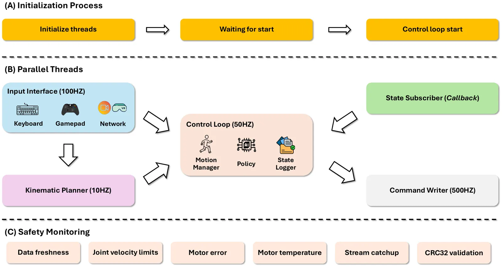
MotionSequence。切换是在互斥锁下原子地换指针，帧计数归零。编码器模式是序列的一个字段，换来源就自动换编码器。导航：从目标风格的导航片段随机选一段，放到目标根轨迹上。自回归重规划让它在到达片段末尾前就刷新，所以不依赖关键帧的具体空间细节。娱乐：取表现力最强的片段（比如出拳手臂最伸展的帧）。还支持动作分层：指定上身，下身由规划器生成。交互操作：蹲、跪时按目标高度在线检索关键帧。每种技能只要一个片段。
全身 VR。每帧 87 维：63 维（21 × 3）全身关节位置，4 维根朝向四元数，6 维（2 × 3）腕关节，14 维（2 × 7）手关节。走 \(\mathcal E^h\)。
三点 VR。输出三个上身 SE(3) 位姿、手关节角、腰高、运动模式（慢走或快走）和导航命令。送进规划器和 \(\mathcal E^m\)。
三点 VLA。采 300 条示教，微调 GR00T N1.5，模型输出同样格式的信号，经规划器和 \(\mathcal E^m\) 执行。20 次 90%。
全身 VLA。78 维动作。汽水罐任务还用了 1,000 条多物体（汽水罐、纸杯、纸板等）和 150 条单物体数据。
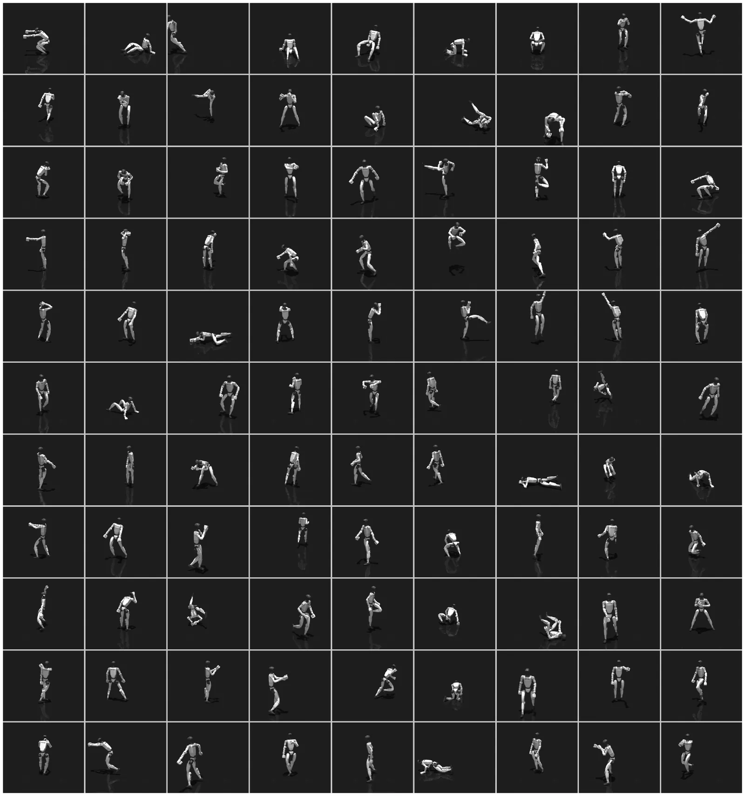
test-content 中成功的例子：嘻哈舞、鞠躬、剑刺、回旋踢。失败的：僵尸爬（贴地、超出关节限位）、盘腿坐（持续接触，离训练分布远）。说明持续或复杂的地面接触仍然难。这和 SuperMimic 表 A.8 里 SONIC 失败集中的类别（侧滚、躺下起身）方向一致（我的观察，那边是训练集，判据也不同）。
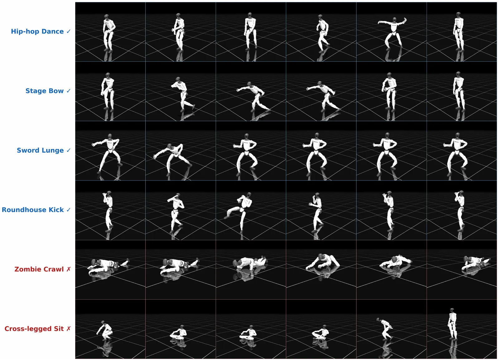
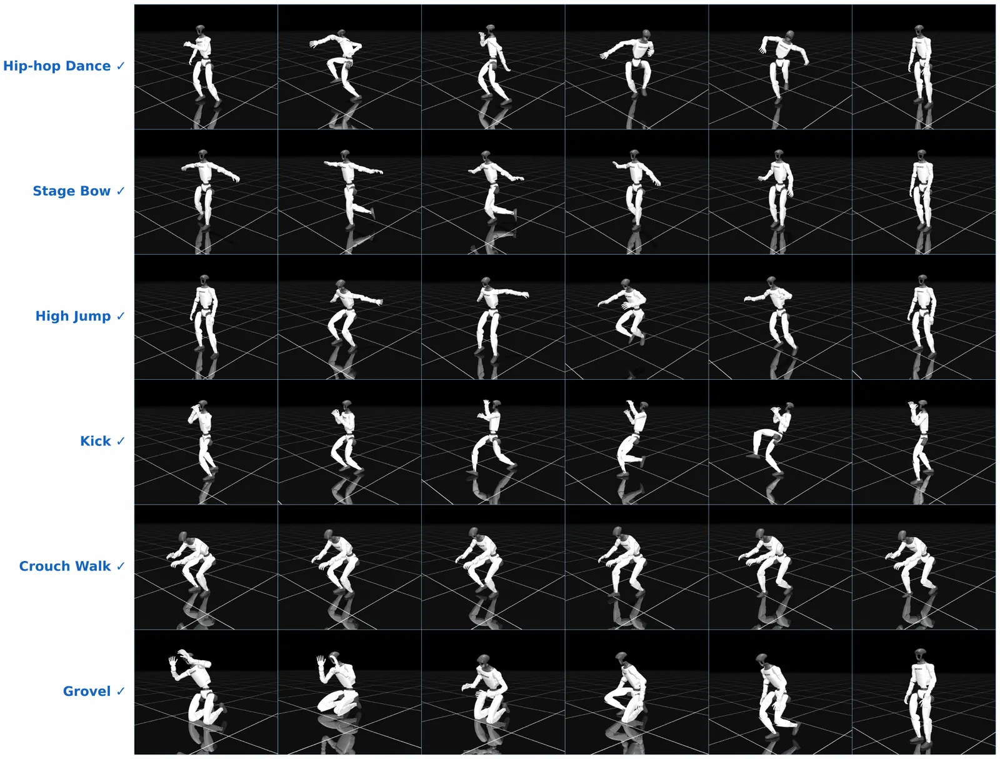
把约 11 kg（25 磅）的物体从头顶以上砸到正在跟踪的机器人身上，它吸收冲击、保持平衡、继续跟踪，没有恢复模块或策略适配。这是定性演示，论文没有统计。
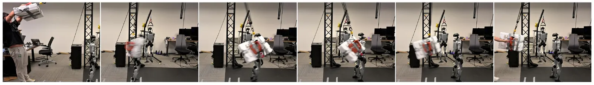
OpenHomie 从 1 GPU（4k 环境）到 32 GPU（4 节点），8 GPU 最好（0.18 m/s 误差，95.0% 存活），到 32 GPU 不再改善（0.29 m/s，91.2%）。作者据此说专门任务的奖励学会就饱和，而跟踪继续受益。
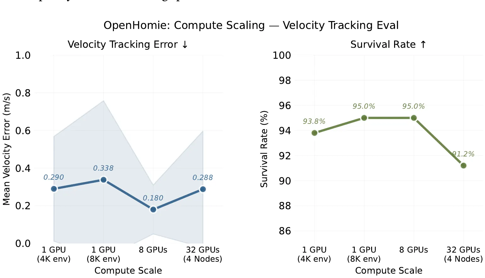
图注说每个配置 80 次（20 个速度 × 4 方向）。存活率换算：93.75 = 75/80，95 = 76/80，91.25 = 73/80，也就是最多差 3 次。误差的阴影（±1 s.d.）在 8 GPU 是约 0.05 到 0.31，在 32 GPU 从 0 到 0.60，均值差 0.11 完全在里面。图中的 1 GPU（4K）和 32 GPU 误差几乎一样（0.290 和 0.288）。这些是一个种子还是几个，论文没写。测速范围只到 2 m/s，而图 2 的主比较到 5 m/s。
所以这张图支持“OpenHomie 加 GPU 没明显变好”，不足以支持“变差”；和 SONIC 的对比也不是同一指标。作为“跟踪比专门控制器更能放大”的证据是弱的。Fig. 2H–J 用的 OpenHomie 是哪个配置，我没找到说明。
在一段爬行动作上看三个编码器的 token 距离，有无一致性损失对比。
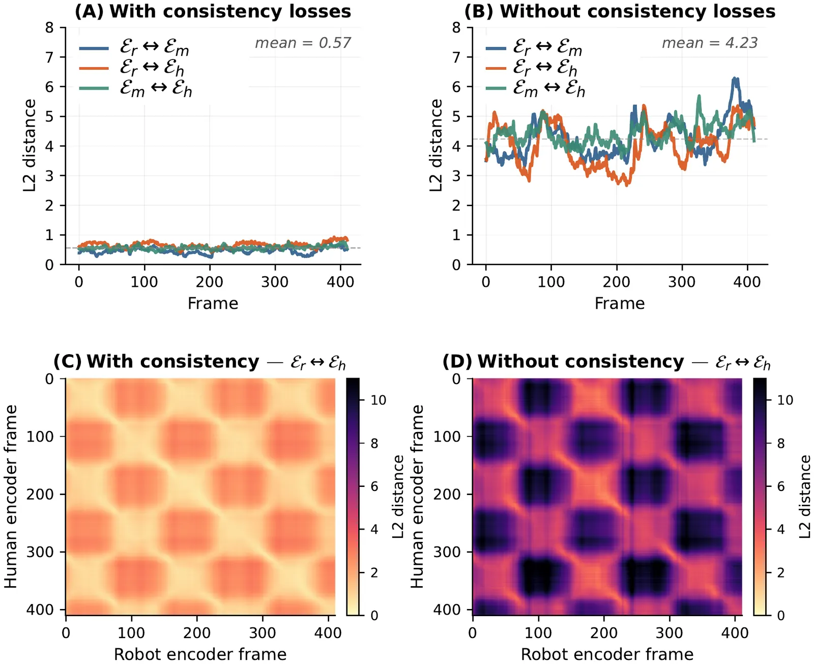
4.23 / 0.57 = 7.42，§3.6 和 S2.6 写 “8×”，四舍五入得不到 8。而且只有一段爬行动作，图上的距离是在哪个量（量化前还是后）上算的也没说。方向是清楚的，具体倍数不宜引用。
项目主页上五段：S1 总览和抗推；S2 交互控制（风格走路、打拳、蹲跪爬）；S3 视频和多模态；S4 VR；S5 VLA。论文说都是全自主，执行中没有人工干预。
Data S1 是一个多表格的表格文件，每个面板一张。我从 Zenodo 取到并读了，图 2 的数值都出自这里。
这些是我核对的结果，不属于论文。全部基于 arXiv v4、v1–v3、代码 1e1ec4f、Hugging Face 的配置和文件大小、Data S1。我没有运行任何代码或仿真。
| 名称 | 是什么 | 主页 | 论文 |
|---|---|---|---|
| BONES-SEED | SONIC 数据的公开部分 | HF | – |
| PHUMA | 外部测试集 | GitHub | 2510.26236 |
| LaFAN | 基线的训练数据 | GitHub | – |
| AMASS | GMT 的训练数据 | 主页 | 1904.03278 |
| Isaac Lab | 训练和放大评测的仿真器 | 主页 | – |
| MuJoCo | 基线对比的仿真器 | 主页 | – |
| SMPL | 人体参数模型 | 主页 | – |
| Unitree G1 | 实验平台 | 主页 | – |
| GMT、Any2Track、BeyondMimic、HOMIE | 基线 | – | 2506.14770、2509.13833、2508.08241、2502.13013 |
| FSQ、VQ-VAE、PPO、GR00T N1 | 组件 | – | 2309.15505、1711.00937、1707.06347、2503.14734 |
| MotionBricks | 规划器的公开实现 | 主页 | – |
以上 URL 我都用脚本确认过返回 200。GMR 主页同样。science.org 对脚本返回 403，所以发表版没读。